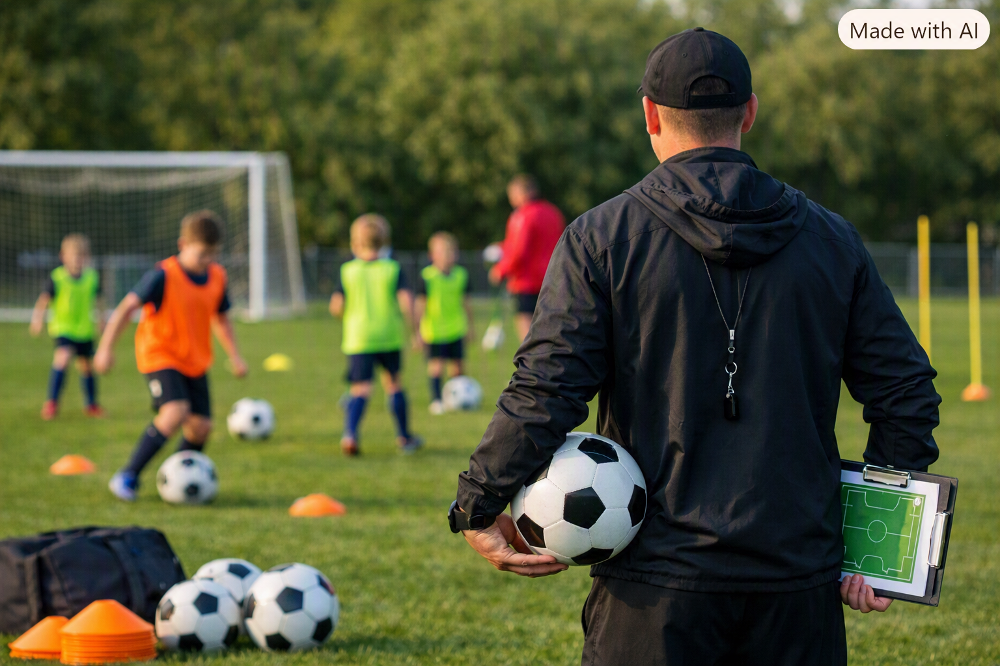
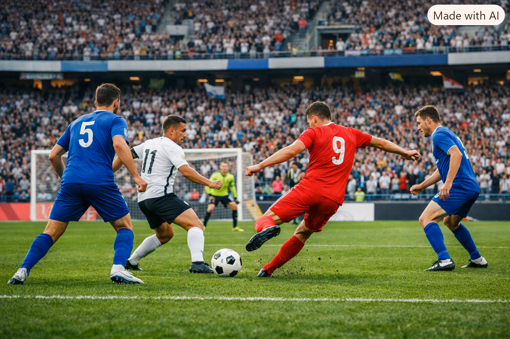

Fotbollsträning och ledarskap
Jag tränar ett ungdomslag i Högaborgs Bollklubb, där jag arbetar med att utveckla spelarnas teknik, laganda och självförtroende. För mig är fotboll mer än bara en sport, det är ett sätt att bygga gemenskap och hjälpa unga att växa. Som tränare fokuserar jag på att skapa en trygg miljö där alla spelare känner sig sedda och får möjlighet att utvecklas. jag brinner för ledarskap och att hjälpa andra att utvecklas. Det glädjer mig alltid att se andra utvecklas och uppnå sina mål.
Länk till Högaborg BKs Wikipedia sida
Fotboll
Jag spelar inte fotboll själv, men jag följer sporten så mycket jag kan. När jag har tid är det matcher som gäller, och jag fastnar framför allt för den spanska ligan. Jag gillar tekniken, tempot och hur spelet ofta känns som ett taktiskt schackparti. Samtidigt följer jag den engelska ligan, där intensiteten och atmosfären gör varje omgång speciell. Fotboll är för mig ett intresse jag njuter av genom att titta, analysera och leva mig in i matcherna — utan att behöva vara på planen själv.
Lag jag mest följer är Barcelona, Real Madrid och Arsenal.

| Lag | land | Liga | Grundad |
|---|---|---|---|
| FC Barcelona | Spanien | La Liga | 1899 |
| Arsenal | England | Premier League | 1886 |
| Real Madrid | Spanien | La liga | 1902 |